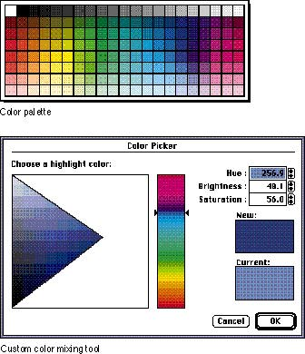

|
Match Complexity to the Level of UserThink about the range of users that your application will be addressing. If you will have novice users and expert users, you need to construct tools that are easy for novice users to understand, but that don't limit your expert users from using their knowledge and skills. For example, you might provide several sets of colors, which can each appear in turn in a palette, that novice users can set and then choose from. In addition, you can build in a way for expert users to create their own sets of colors, including the ability to mix custom colors. This design lets your novice users focus on the simplicity and clarity of your application and gives your expert users access to the advanced tools you provide.Figure 9-3 shows a color palette that novice users can easily use and a color mixing tool that requires more understanding of the interface and the topic. Figure 9-3 Color palette and custom color mixing tool  |